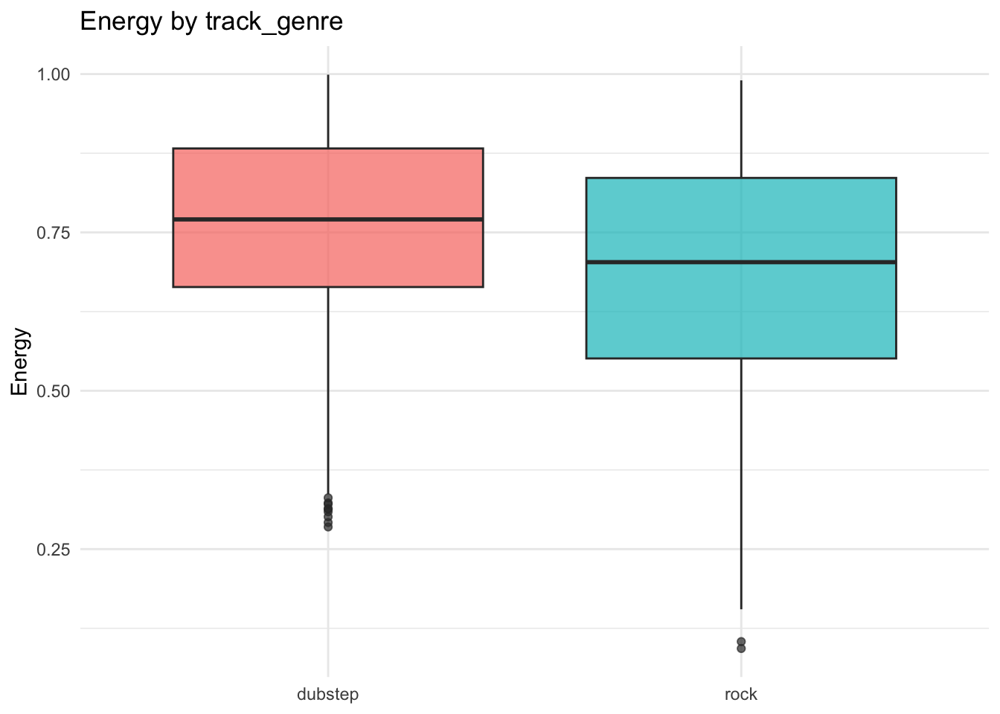
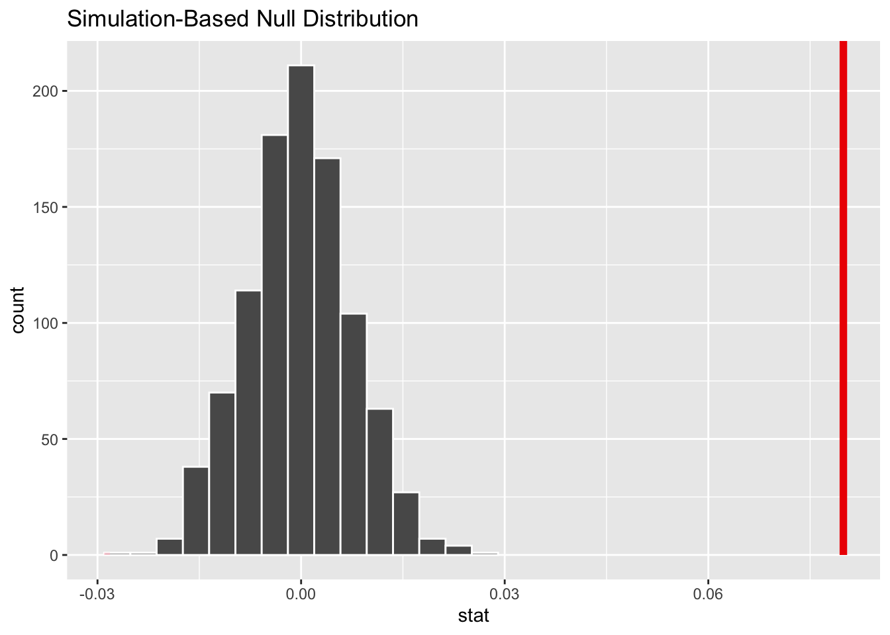
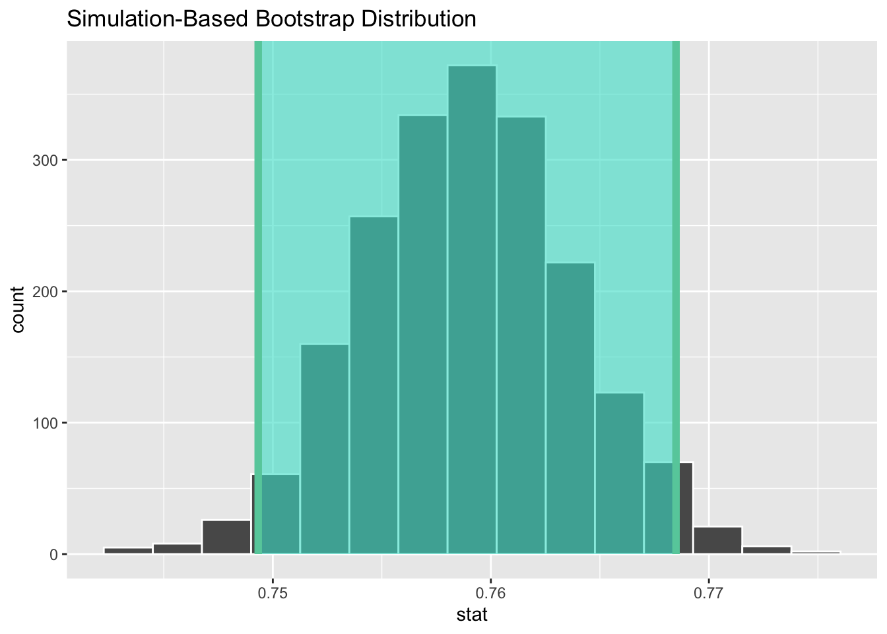

Code
# load core packages
library(tidyverse)
library(moderndive)
library(infer)
# for reproducibility
set.seed(2025)# load core packages
library(tidyverse)
library(moderndive)
library(infer)
# for reproducibility
set.seed(2025)This vignette shows how to use infer with the spotify_by_genre data from moderndive. You will run a randomization test for a difference in means and build a bootstrap confidence interval.
The core infer workflow is: specify() -> hypothesize() -> generate() -> calculate() -> visualize() -> summarize().
# look at structure of the dataset
glimpse(spotify_by_genre)Rows: 6,000
Columns: 21
$ track_id <chr> "2wrJq5XKLnmhRXHIAf9xBa", "6AHJTA1BN7ePfChCwqph3z", "…
$ artists <chr> "Dan + Shay;Justin Bieber", "Luke Bryan", "Thomas Rhe…
$ album_name <chr> "10,000 Hours (with Justin Bieber)", "Country USA", "…
$ track_name <chr> "10,000 Hours (with Justin Bieber)", "Country On", "D…
$ popularity <dbl> 78, 0, 1, 3, 4, 4, 2, 2, 1, 2, 1, 0, 8, 0, 0, 2, 3, 1…
$ duration_ms <dbl> 167693, 236455, 228320, 228013, 228013, 228013, 22801…
$ explicit <lgl> FALSE, FALSE, FALSE, FALSE, FALSE, FALSE, FALSE, FALS…
$ danceability <dbl> 0.654, 0.520, 0.590, 0.369, 0.369, 0.369, 0.369, 0.36…
$ energy <dbl> 0.630, 0.751, 0.389, 0.192, 0.192, 0.192, 0.192, 0.19…
$ key <dbl> 10, 5, 2, 4, 4, 4, 4, 4, 4, 2, 4, 4, 4, 4, 4, 1, 8, 4…
$ loudness <dbl> -4.644, -5.064, -9.245, -12.151, -12.151, -12.151, -1…
$ mode <dbl> 1, 1, 1, 0, 0, 0, 0, 0, 0, 1, 0, 0, 1, 0, 0, 1, 1, 0,…
$ speechiness <dbl> 0.0259, 0.0551, 0.0387, 0.0400, 0.0400, 0.0400, 0.040…
$ acousticness <dbl> 0.15300, 0.17100, 0.41100, 0.55500, 0.55500, 0.55500,…
$ instrumentalness <dbl> 0.00e+00, 7.40e-06, 1.48e-06, 8.35e-06, 8.35e-06, 8.3…
$ liveness <dbl> 0.1110, 0.0624, 0.1170, 0.0954, 0.0954, 0.0954, 0.095…
$ valence <dbl> 0.430, 0.519, 0.389, 0.148, 0.148, 0.148, 0.148, 0.14…
$ tempo <dbl> 89.991, 156.044, 166.055, 175.212, 175.212, 175.212, …
$ time_signature <dbl> 4, 4, 4, 3, 3, 3, 3, 3, 3, 4, 3, 3, 4, 3, 3, 4, 4, 3,…
$ track_genre <chr> "country", "country", "country", "country", "country"…
$ popular_or_not <chr> "popular", "not popular", "not popular", "not popular…# keep dubstep and rock only
spotify_by_genre |>
# set up the plot mapping
filter(track_genre %in% c("dubstep", "rock")) |>
# draw a simple boxplot
ggplot(aes(x = track_genre, y = energy, fill = track_genre)) +
# add boxplots
geom_boxplot(alpha = 0.7) +
# label the plot
labs(title = "Energy by track_genre", x = NULL, y = "Energy") +
# minimal theme
theme_minimal() +
# remove legend (redundant with x-axis labels)
theme(legend.position = "none")
Hypotheses
Set \(\alpha = 0.05\) to set a threshold and then decide whether to reject \(H_0\).
More information on what’s going on in each step can be found in the Hypothesis Testing chapter of ModernDive.
# start with the raw data and keep only the two track_genres of interest
spotify_by_genre |>
# declare response and explanatory variables for a difference in means
filter(track_genre %in% c("dubstep", "rock")) |>
# tell infer we want energy by track_genre
specify(energy ~ track_genre) |>
# encode the null world of no association between energy and track_genre
hypothesize(null = "independence") |>
# shuffle labels to simulate the null distribution
generate(reps = 1000, type = "permute") |>
# compute the difference in means for each permuted sample
calculate(stat = "diff in means", order = c("dubstep", "rock")) |>
# draw the null distribution
visualize() +
# shade the two-sided p-value region using the observed difference in means
shade_p_value(
# compute the observed stat inline from the original data
obs_stat = spotify_by_genre |>
# same filtering as above to match the analysis
filter(track_genre %in% c("dubstep", "rock")) |>
# same specification as above
specify(energy ~ track_genre) |>
# compute the observed difference in means
calculate(stat = "diff in means", order = c("dubstep", "rock")) |>
# pull the numeric value
dplyr::pull(stat),
direction = "two-sided"
)
# start with the raw data and keep only the two track_genres of interest
spotify_by_genre |>
# declare response and explanatory variables for a difference in means
filter(track_genre %in% c("dubstep", "rock")) |>
# tell infer we want energy by track_genre
specify(energy ~ track_genre) |>
# encode the null world of no association between energy and track_genre
hypothesize(null = "independence") |>
# shuffle labels to simulate the null distribution
generate(reps = 2000, type = "permute") |>
# compute the difference in means for each permuted sample
calculate(stat = "diff in means", order = c("dubstep", "rock")) |>
# get a two-sided p-value using the observed statistic computed inline
get_p_value(
obs_stat = spotify_by_genre |>
filter(track_genre %in% c("dubstep", "rock")) |>
specify(energy ~ track_genre) |>
calculate(stat = "diff in means", order = c("dubstep", "rock")) |>
dplyr::pull(stat),
direction = "two-sided"
)# A tibble: 1 × 1
p_value
<dbl>
1 0Interpretation tip If the p-value is small, the observed difference in mean energy is unlikely under the null model, which supports the alternative.
We now build a 95 percent bootstrap interval for the mean energy within the dubstep genre.
More details on this workflow can be found in the Confidence Intervals chapter of ModernDive.
# keep only dubstep tracks
spotify_by_genre |>
# declare the response variable for a one-sample mean
filter(track_genre == "dubstep") |>
# tell infer we care about the distribution of energy
specify(response = energy) |>
# sample with replacement to create bootstrap samples
generate(reps = 2000, type = "bootstrap") |>
# compute the mean for each bootstrap sample
calculate(stat = "mean") |>
# draw the bootstrap distribution
visualize() +
# shade the default 95% percentile-based confidence interval
shade_ci(
# compute CI endpoints inline from the same bootstrap results
endpoints = spotify_by_genre |>
filter(track_genre == "dubstep") |>
specify(response = energy) |>
generate(reps = 2000, type = "bootstrap") |>
calculate(stat = "mean") |>
get_ci()
)
# keep only dubstep tracks
spotify_by_genre |>
# declare the response variable for a one-sample mean
filter(track_genre == "dubstep") |>
# tell infer we care about the distribution of energy
specify(response = energy) |>
# sample with replacement to create bootstrap samples
generate(reps = 2000, type = "bootstrap") |>
# compute the mean for each bootstrap sample
calculate(stat = "mean") |>
# compute a 95% percentile confidence interval
get_ci()# A tibble: 1 × 2
lower_ci upper_ci
<dbl> <dbl>
1 0.749 0.769Interpretation tip This interval gives a range of plausible values for the true average energy of dubstep tracks in the population represented by this sample.
You used a consistent set of verbs to run a randomization test and to build a bootstrap confidence interval.
This pattern helps focus on the statistical idea while keeping the code compact and readable.
Your randomization test and bootstrap CI got matching verbs? Bro, that’s not just good coding style — that’s data rizz.